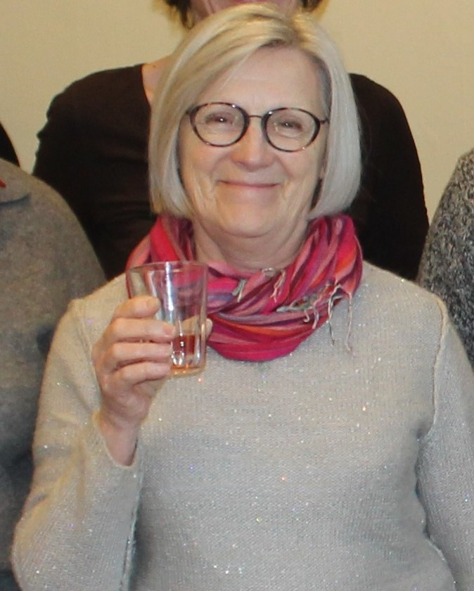

L'Art sans contrainte
"C'est sans aucune contrainte artistique qu'Yvette Hallet crée des œuvres colorées, racontant des histoires à travers la texture et la matière."
🎨 Matériaux & Technique
Son support favori depuis 5 ans est le carton de récupération. Elle apprécie sa texture, son satiné et cet effet « peau usée » qui relate déjà une histoire. Elle peint également sur toile, bois et plexiglas.
Le carton est travaillé à l'huile, tandis que le plexiglas exige l'immédiateté de l'acrylique : le geste doit être rapide, parfois imparfait, sans rémission possible.
🌍 Inspiration & Thèmes
L'artiste aime redonner vie aux natures mortes, mais elle est aussi profondément touchée par les sujets de société, comme la question des migrants.
À travers ses œuvres, elle exprime ses joies et ses colères. La couleur est son langage, notamment le rouge et des gris colorés qu'elle crée elle-même pour apporter de la douceur.
Parcours & Biographie
Institutrice de métier, dessinatrice depuis l'enfance. Détermination à se former artistiquement malgré les obstacles.
Cours du soir à l'IRAM (St-Luc) à Mons durant trois ans.
Académie des Beaux-Arts à Namur (Sculpture) et inscription à l'atelier de peintres à Beauraing.
Transmission de l'expérience en animant des ateliers pour les participants.
🏆 Reconnaissance
Prix reçus : 1987, 1998, 2003, 2011, 2013, 2018.
Stages en France, Italie, Espagne et Grèce.
Expose aujourd'hui dans sa Galerie privée CHEV'HALLET et à la Foire internationale d'Art Contemporain à Londres.